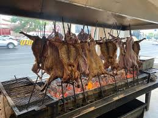

19.Nuevo León

- Platillo: Cabrito al pastor
- Ingredientes: Cabrito joven, sal, ajo, hierbas; se asa entero en estaca.
- Historia: Herencia judía y árabe llegada con los primeros colonos del noreste en el siglo XVI.
- Dato curioso: Se asa durante horas clavado sobre brasas, y es considerado un platillo de lujo en celebraciones.